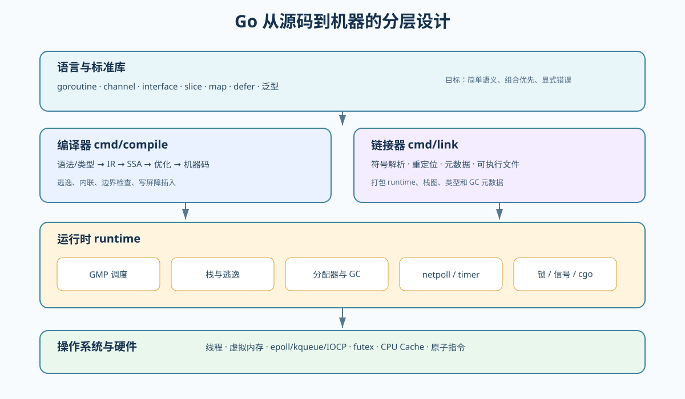
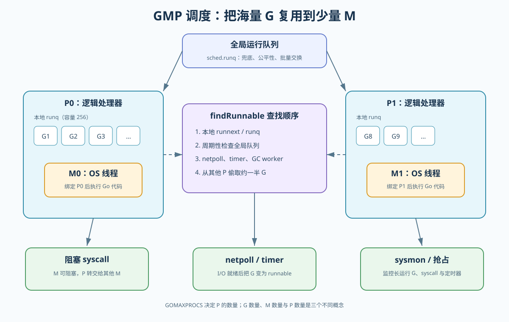
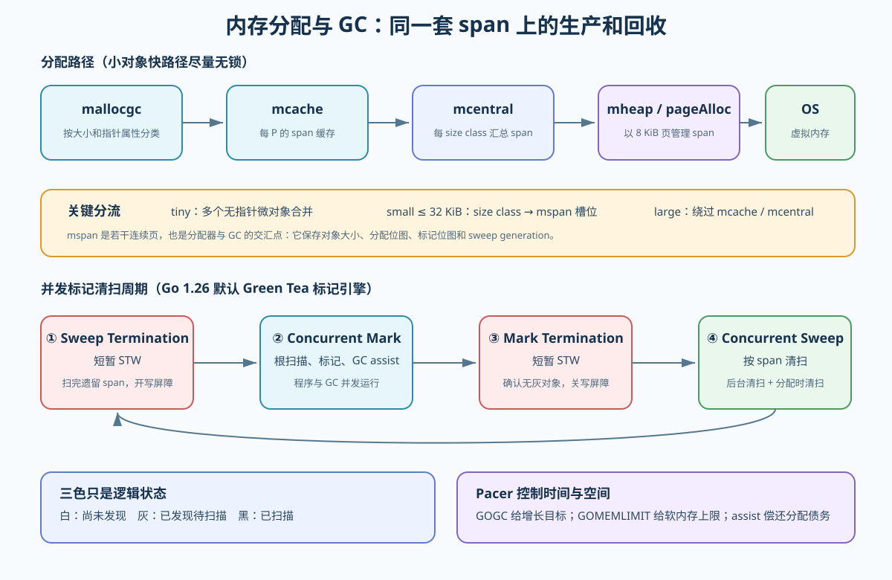
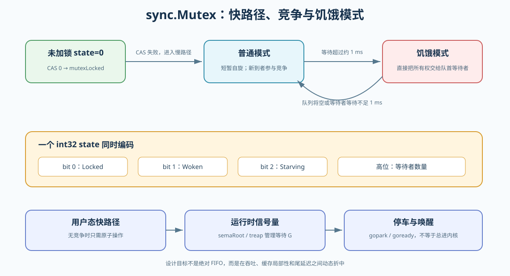

Go 语言设计与实现：从历史选择到 Go 1.26.5 运行时源码
本文面向已经掌握 Go 基础语法、希望真正理解“为什么这样设计”的读者。内容以 Go 1.26.5（2026-07-07 发布）为源码基线，重点分析编译器、GMP 调度器、栈、内存分配器、Green Tea GC、
sync.Pool、锁、channel、map 与网络轮询等模块。运行时内部结构不是 Go 1 兼容承诺的一部分，字段和算法可能继续演进。生产代码不应通过
unsafe或//go:linkname依赖这些细节；本文中的简化结构只用于建立心智模型。
目录
- 1. 先理解 Go 在解决什么问题
- 2. Go 的发展历史：每次演进都在偿还什么成本
- 3. 从源代码到运行中的程序
- 4. GMP 调度模型
- 5. goroutine 栈、逃逸与抢占
- 6. 内存分配器：mcache、mcentral、mheap
- 7. GC：从三色标记到 Green Tea
- 8. 写屏障、GC Assist 与 Pacer
- 9. MP 与对象复用：sync.Pool
- 10. 锁：从原子快路径到 goroutine 停车
- 11. channel、select 与 sudog
- 12. 网络轮询器、timer 与 syscall
- 13. map、slice、string 与 interface
- 14. defer、panic 与 recover
- 15. Go 内存模型
- 16. cgo 与运行时边界
- 17. 如何阅读和验证 Go 源码
- 18. 生产问题如何映射到运行时原理
- 19. 总结
1. 先理解 Go 在解决什么问题
Go 并不是为了在语法层面“比 C++ 更强”，而是为了降低大型软件工程的总体成本。它诞生时，Google 面临的是多核硬件、网络服务、大规模代码库和漫长构建时间共同带来的问题：
- C/C++ 能力很强，但构建、依赖和语言复杂度不断上升。
- 线程适合操作系统，却不是编写百万连接服务的理想抽象。
- 手工内存管理容易把局部性能收益变成全局可靠性风险。
- 动态语言开发快，但静态检查、部署和持续性能不够理想。
Go 的核心选择可以概括为：
| 选择 | 得到什么 | 付出什么 |
|---|---|---|
| 垃圾回收 | 内存安全、简化所有权 | GC CPU、内存余量和尾延迟 |
| goroutine + channel | 低成本并发、同步通信 | 仍需处理泄漏、竞争和背压 |
| 小而稳定的语言 | 易学、易读、工具容易统一 | 少一些表达自由，抽象更克制 |
| 静态链接和快速编译 | 部署直接、构建反馈快 | 二进制较大，运行时被链接进程序 |
| 组合而非继承 | 依赖关系简单 | 某些框架式抽象写起来不够“魔法” |
| 显式错误值 | 控制流可见 | 错误处理代码较多 |

一个关键认知是：
Go 的简洁主要来自把复杂度集中到编译器、运行时和工具链，而不是让复杂度消失。
开发者写一条 go f() 很简单，但运行时要完成 G 的创建、入队、工作线程唤醒、栈管理、抢占、GC 扫描和退出回收。理解 Go 的本质，就是理解这些隐藏成本如何被控制。
2. Go 的发展历史：每次演进都在偿还什么成本
2.1 关键时间线
| 时间/版本 | 重要变化 | 背后的问题 |
|---|---|---|
| 2007 | Robert Griesemer、Rob Pike、Ken Thompson 开始设计 Go | 大型 C++ 工程构建慢、复杂度高，多核与网络编程困难 |
| 2009 | Go 开源 | 公开验证语言、工具链与并发模型 |
| 2012，Go 1 | 发布兼容性承诺 | 生态需要稳定语义，而不是持续破坏式创新 |
| Go 1.1 | 新调度器逐步确立 G-M-P 模型 | 旧调度器全局锁重、线程亲和性和 syscall 处理不足 |
| Go 1.3 | goroutine 栈改为连续、可复制栈 | 分段栈容易出现 hot split，调用边界反复扩缩 |
| Go 1.5 | 编译器和运行时由 C 重写为 Go；并发 GC 大幅推进 | 降低自举维护成本，缩短 GC 停顿 |
| Go 1.8 | GC 停顿进一步下降 | 服务端程序对尾延迟越来越敏感 |
| Go 1.14 | 基于信号的异步抢占 | 无函数调用的长循环也应被抢占 |
| Go 1.18 | 泛型正式加入 | 在保持语言克制的同时减少容器、算法的重复实现 |
| Go 1.19 | 修订内存模型；加入 GOMEMLIMIT |
明确原子操作语义，并让 GC 感知容器内存约束 |
| Go 1.21 | PGO 正式可用，工具链管理增强 | 用真实 Profile 指导编译优化，降低升级成本 |
| Go 1.22 | for 循环变量语义修正 |
消除闭包捕获循环变量的高频陷阱 |
| Go 1.23 | range-over-func 迭代器 | 为自定义集合提供语言级迭代协议 |
| Go 1.24 | map 切换到 Swiss Table 系列设计 | 提升局部性、查询效率和大 map 扩展能力 |
| Go 1.25 | Green Tea GC 作为实验；容器感知的 GOMAXPROCS |
提升小对象扫描局部性，适配 CPU quota |
| Go 1.26 | Green Tea GC 默认启用 | 降低 GC 密集应用的标记扫描开销 |
2.2 Go 1 兼容承诺的意义
Go 1 的核心承诺是：按规范编写的旧代码，通常应继续在新的 Go 1.x 工具链上编译运行。它并不保证：
- 编译器每次都做相同的逃逸、内联或去虚化决策；
runtime私有结构的字段和地址不变；- map 迭代顺序稳定；
- GC 算法、调度顺序和性能特征完全不变；
- 使用
unsafe、汇编或//go:linkname的代码自动兼容。
因此应区分三层结论：
- 语言规范保证：可以作为程序正确性的依据。
- 标准库 API 保证：通常受 Go 1 兼容承诺保护。
- 当前实现细节：只能用于解释、诊断和优化，升级时必须重新验证。
3. 从源代码到运行中的程序
3.1 编译流水线
Go 编译器位于 src/cmd/compile，可以把主要过程简化为：
.go 源文件
↓ 词法、语法解析
AST
↓ 名字解析、类型检查、泛型实例化
类型化 IR
↓ walk：语义展开、逃逸分析、闭包/defer 等转换
SSA
↓ 内联、常量传播、死代码消除、边界检查消除、去虚化
目标机器码与 GC 元数据
↓ cmd/link 链接
可执行文件
编译器不只是“翻译语法”，它还要与运行时订立契约：
- 在可能增长栈的函数入口插入栈检查；
- 在 GC 标记期需要的位置插入写屏障；
- 为每个安全点生成栈上的指针位图；
- 把
make(chan T, n)降低为runtime.makechan； - 把
go f(x)降低为创建 goroutine 的运行时调用； - 在适合时把
defer改写成开放编码，避免通用链表开销； - 决定变量位于栈还是堆，但不改变语言可观察语义。
3.2 启动过程
操作系统加载可执行文件后，并不是直接调用用户的 main.main。运行时大致经历：
平台入口 _rt0_*
→ runtime.rt0_go
→ 建立 m0、g0，检查 CPU，初始化 TLS
→ runtime.schedinit
→ 创建 main goroutine
→ runtime.mstart
→ runtime.main
→ 包初始化
→ main.main
几个特殊对象：
m0：进程启动时的第一个 M。g0：每个 M 都有的系统 goroutine，使用固定的系统栈执行调度、栈扩张和部分运行时工作。gsignal：处理信号的专用 G。
普通 G 不能在自己的可移动栈上完成“复制自己的栈”等操作，所以会通过 mcall 切换到 g0 的系统栈。
3.3 编译器与运行时为何紧密耦合
例如一条普通指针赋值：
node.next = child
非 GC 标记期可以直接写；并发标记期则可能需要调用写屏障。编译器生成类似的概念逻辑：
if runtime.writeBarrier.enabled {
runtime.gcWriteBarrier(...)
} else {
node.next = child
}
这说明 Go 的性能不能只看语法。相同的一行源码，可能因为逃逸、内联、GC 阶段或动态类型不同而生成不同路径。
4. GMP 调度模型
4.1 G、M、P 到底是什么

| 对象 | 含义 | 持有什么 |
|---|---|---|
| G（goroutine） | 一段可暂停、可恢复的 Go 执行任务 | 栈、寄存器现场、状态、等待原因、关联的 sudog |
| M（machine） | 操作系统线程的运行时表示 | 当前 G、g0、绑定的 P、线程状态、信号栈 |
| P（processor） | 执行 Go 代码所需的逻辑资源 | 本地运行队列、mcache、timer、GC work cache |
最容易混淆的三件事：
GOMAXPROCS决定 P 的数量，不是 G 数量；- M 是 OS 线程，但 M 的数量不等于 P；
- 一个 M 必须绑定 P 才能执行普通 Go 代码，但阻塞 syscall 中的 M 可以暂时没有 P。
可以把它们类比为：
G 是待处理订单，M 是工人，P 是包含工作台、工具和本地待办队列的工位。工人必须站在工位上才能处理 Go 订单；工人去外部办事时，工位可以交给另一名工人。
4.2 核心结构
Go 1.26.5 的定义主要位于 runtime/runtime2.go。下面是删去大量字段后的概念结构：
type g struct {
stack stack
stackguard0 uintptr
sched gobuf
atomicstatus atomic.Uint32
m *m
goid uint64
waitreason waitReason
preempt bool
schedlink guintptr
waiting *sudog
}
type m struct {
g0 *g
curg *g
p puintptr
nextp puintptr
oldp puintptr
spinning bool
locks int32
lockedg guintptr
}
type p struct {
id int32
status uint32
m muintptr
mcache *mcache
runqhead uint32
runqtail uint32
runq [256]guintptr
runnext guintptr
timers timers
gcw gcWork
}
这里能看到两个重要设计：
- 把高频可变状态放到 P 本地，减少所有线程争抢一个全局锁。
- 调度、分配器、timer 和 GC 都围绕 P 做局部化，以获得 CPU Cache 局部性。
4.3 G 的生命周期
主要状态可简化为：
newproc
_Gidle ───────────→ _Grunnable
│
│ execute
▼
_Grunning
/ | \
gopark / | \ goexit
▼ | ▼
_Gwaiting | _Gdead
│ |
goready│ │抢占
└────→ _Grunnable
还存在 _Gsyscall、_Gcopystack 和带 _Gscan 标志的 GC 扫描状态。状态转换通常通过原子操作完成，运行时会严格检查非法转换。
创建路径的关键入口位于 runtime/proc.go：
go f()
→ runtime.newproc
→ newproc1：取得或创建 G，初始化入口 PC 与栈
→ runqput：放入当前 P 的 runnext 或本地队列
→ wakep：必要时唤醒/创建 M
go 语句只保证新 G 会被安排执行，不保证它立即执行，更不保证先于下一行代码执行。
4.4 调度循环
M 在 schedule 中反复寻找可运行 G，核心是 findRunnable：
schedule
→ findRunnable
→ GC worker
→ 当前 P 的 runnext / 本地 runq
→ 周期性查看全局 runq
→ netpoll 已就绪 G
→ 到期 timer
→ 从其他 P work stealing
→ execute(gp)
→ gogo(&gp.sched)
查找顺序会随版本调整，不应依赖精确顺序。但可以依赖这些设计原则：
- 本地优先：减少锁竞争和缓存迁移。
- 全局兜底：处理本地队列溢出并提供公平性。
- 工作窃取：空闲 P 从繁忙 P 窃取任务。
- I/O 融合：网络就绪事件直接转化为 runnable G。
- GC 融合：调度器可以安排 GC worker。
当前实现会周期性检查全局队列，避免两个 G 在同一个 P 上不断相互唤醒而使全局任务饥饿。历史上常见的源码细节是每隔约 61 个调度 tick 检查一次；这是实现策略，不是 API 契约。
4.5 本地队列、全局队列与 runnext
每个 P 有容量为 256 的环形本地运行队列，并有一个特殊的 runnext：
- 普通 G 进入本地队列尾部；
runnext倾向于让刚唤醒的相关 G 接着运行，并可继承当前时间片；- 本地队列满时，一部分 G 会批量转移到全局队列；
- P 无任务时可从其他 P 窃取约一半任务。
runnext 改善生产者/消费者、锁交接等场景的局部性，但调度器不会承诺严格 FIFO。Go 调度器追求的是吞吐、公平性和局部性的折中。
4.6 为什么不直接“新 G 对应新线程”
一对一线程模型的问题包括：
- 线程栈通常更大，百万线程不可行；
- 创建、销毁和内核调度开销高；
- 线程阻塞会占用内核资源；
- 很难在语言运行时层配合 GC、timer 和网络轮询。
GMP 是 M:N 调度：大量 G 复用到较少 M，再由操作系统调度 M。它既没有绕过 OS 调度，也不是一个固定大小的传统线程池。
4.7 M 的自旋与休眠
当有空闲 P，却暂时找不到 G 时，M 可能短暂处于 spinning 状态。设计难点在于：
- 立即休眠：新任务到来时需要唤醒线程，增加延迟；
- 一直自旋：浪费 CPU 和电量；
- 每提交一个 G 都唤醒 M：造成线程频繁抖动。
当前策略大意是：有空闲 P 且没有其他 spinning M 时，才唤醒一个额外 M；最后一个 spinning M 找到工作后，还要确保必要时补充新的 spinning M。proc.go 文件开头对此有非常详细的设计注释。
4.8 系统监控 sysmon
sysmon 是不需要 P 的系统监控线程，主要协助：
- 检查长时间运行的 G 并请求抢占；
- 从长时间 syscall 中夺回 P；
- 处理 timer 与 netpoll；
- 在长期没有 GC 时触发强制 GC；
- 协助 scavenger 等运行时任务。
它不是“万能后台线程”，也不会替应用修复无界并发和锁竞争。
5. goroutine 栈、逃逸与抢占
5.1 为什么 goroutine 可以很轻
goroutine 的初始栈较小，并按需扩张。具体初始大小与平台有关，常见 Unix 64 位平台通常是 2 KiB，Windows 64 位平台可能更大。相比为每个线程预留很大的地址空间，这更适合大量并发任务。
每个可增长栈函数入口都会检查：
SP 是否接近 stackguard0
否 → 正常执行
是 → morestack → 切到 g0 → newstack → 扩栈/抢占
扩栈时，运行时申请更大的连续栈、复制旧栈，并调整栈内指针。编译器生成的精确栈图告诉 GC 和栈复制器哪些字是指针。
5.2 从分段栈到连续可复制栈
早期 Go 使用分段栈：空间不足就链接一个新栈段。它的典型问题是 hot split：
函数 A 在循环中调用 B
→ B 入口刚好触发扩段
→ B 返回又释放段
→ 下一轮再次扩段
Go 1.3 后采用连续、可复制栈。扩张单次更贵，但摊销更好，调用路径也更简单。这是典型的“用偶发批量成本换取稳定快路径”。
5.3 逃逸分析
编译器会判断一个值能否安全放在当前栈帧。常见逃逸原因：
- 返回后仍被引用；
- 被闭包捕获且生命周期更长；
- 放入接口后流向未知调用；
- 大小在编译时未知或对象过大；
- 编译器无法证明指针不会越过当前作用域。
type Config struct {
Timeout int
}
func newConfig() *Config {
// 返回指针并不必然意味着程序设计差。
// 编译器根据完整数据流决定是否逃逸。
return &Config{Timeout: 3}
}
观察命令：
go build -gcflags="all=-m=2" ./...
不要为了“零逃逸”把代码改得复杂。逃逸是成本信号，不是错误；应先用 benchmark 和 allocation profile 证明它处于热路径。
5.4 协作式与异步抢占
早期抢占主要依赖函数调用处的栈检查。如果 G 在没有函数调用的紧循环中运行，其他 G 和 GC 可能长时间等待。
Go 1.14 引入基于信号的异步抢占。运行时可向目标 M 发送信号，在安全的异步抢占点把执行流转到抢占处理逻辑。仍有不可抢占区，例如：
- 正在运行某些运行时关键代码；
- 持有禁止抢占的内部状态；
- cgo 或外部系统调用中；
- 指令位置不满足安全条件。
抢占保证系统最终能取得执行权，不保证实时调度。Go 调度器不是硬实时调度器。
6. 内存分配器：mcache、mcentral、mheap
6.1 总体结构

Go 分配器最初借鉴 TCMalloc，但已长期独立演进。核心源码包括：
runtime/malloc.go：分配器总览与mallocgc；runtime/mcache.go：每 P 缓存；runtime/mcentral.go：同 size class 的 span 集合；runtime/mheap.go：页堆、arena、mspan；runtime/mpagealloc.go：页分配器；runtime/mgcscavenge.go：向 OS 归还物理页。
层级关系：
对象
↓ 槽位
mspan（若干连续页，被切为同尺寸对象）
↓
mcache（每 P 持有各 span class 的当前 mspan）
↓
mcentral（每 span class 的全局 span 集合）
↓
mheap / pageAlloc（管理页）
↓
arena / 操作系统虚拟内存
6.2 为什么分层
如果每次 new(T) 都获取全局锁并向 OS 申请内存，分配会成为全程序瓶颈。分层设计把不同成本摊薄：
- P 从本地
mcache分配对象槽位，常见路径不加全局锁； mcache一次从mcentral取得整个 span，摊薄中心锁；mcentral一次从mheap取得若干页；mheap批量向 OS 保留或提交内存。
这与 GMP 使用本地运行队列是同一种思想：分布式快路径，集中式慢路径。
6.3 tiny、小对象和大对象
当前源码把分配大致分为：
| 类型 | 路径 | 目的 |
|---|---|---|
| tiny，无指针且很小 | tiny allocator 合并到 16 字节块 | 降低大量微对象的元数据成本 |
| 小对象，最大 32 KiB | 归入约 70 个 size class，通过 mcache 分配 |
用少量内部碎片换高速分配 |
| 大对象，超过 32 KiB | 直接从 mheap 分配 span |
避免不适合 size class 的浪费 |
32 KiB 是 Go 1.26.5 当前实现边界，不是语言规范。
6.4 mspan 是关键交汇点
mspan 表示一段连续页。一个用于小对象的 span 通常只服务一个 size class，并保存：
- 起始地址与页数；
- 对象数量和对象大小；
- 已分配数量；
- 下一个空闲槽位；
- 分配位图、GC 标记位图；
- sweep generation；
- 是否含指针、是否需要清零；
- finalizer、profile 等 special 记录。
分配器负责把空槽交给程序；GC 负责判断哪些已分配槽不再存活；sweeper 再把死亡槽变回可分配状态。因此分配和回收不是两套独立系统。
6.5 arena、页与物理内存
运行时以 arena 组织虚拟地址空间。Go 1.26.5 的典型 64 位非 Windows arena 是 64 MiB，Windows 64 位通常是 4 MiB；运行时页当前是 8 KiB。每个 arena 有堆外元数据，记录页到 mspan 的映射和标记信息。
必须区分：
- HeapAlloc/heap live：Go 堆中对象占用；
- HeapInuse：已交给 span 使用的页；
- HeapIdle：已保留但当前空闲的页；
- HeapReleased：已提示 OS 可回收物理内存的页；
- RSS：操作系统观察到的常驻物理页，还包括栈、代码、共享库、运行时元数据等。
所以 RSS 大于存活堆不是自动等于泄漏。应结合 runtime/metrics、heap profile 和时间趋势分析。
6.6 scavenger 不等于 GC
GC 找到不再可达的对象；sweeper 回收 span 中的对象槽位；scavenger 再把长期空闲的物理页归还给 OS。三者职责不同：
不可达对象
→ 标记阶段认定死亡
→ 清扫阶段槽位可复用
→ 整页空闲后进入 page heap
→ scavenger 视压力与空闲情况归还物理页
程序释放对象后，RSS 不一定立即下降，这是正常现象。
7. GC：从三色标记到 Green Tea
7.1 当前 GC 的基本属性
Go 1.26.5 的 GC 仍然是：
- 并发；
- 精确（知道哪些位置是指针）；
- 并行标记；
- 非分代；
- 非压缩、对象不移动；
- 以并发标记清扫为总体框架；
- 使用写屏障维持并发标记正确性。
“Green Tea 是新 GC”不意味着这些属性全部改变。它主要重构了标记扫描引擎的工作组织方式。
7.2 三色标记是逻辑模型
从根集合出发，可以把对象理解为：
- 白色：本轮尚未证明可达；
- 灰色：已经发现，但其指针字段尚未扫描完；
- 黑色：已经发现，且指针字段已经扫描完。
基本过程：
根（全局变量、各 G 的栈、运行时根）
→ 标灰直接引用对象
→ 取一个灰对象，扫描其指针
→ 新对象标灰，当前对象变黑
→ 没有灰对象后，剩余白对象不可达
颜色并不一定是对象头中的三个真实枚举值，而是标记位和工作队列共同表达的逻辑状态。
7.3 一轮 GC 的四个阶段
runtime/mgc.go 文件头给出了权威流程：
- Sweep Termination - 短暂 STW； - 完成上一轮遗留清扫； - 所有 P 到达安全点。
- Concurrent Mark
- STW 中切换
_GCmark、启用写屏障和 GC assist； - 恢复世界； - 扫描全局变量、G 栈和运行时根； - 后台 mark worker 与应用并发标记。 - Mark Termination - 再次短暂 STW； - 确认分布式标记工作结束； - 刷新缓存并关闭标记阶段。
- Concurrent Sweep - 恢复世界； - 后台 sweeper 和分配路径按 span 清扫； - scavenger 处理空闲物理页。
“并发 GC”不等于完全没有 STW，而是把绝大多数工作移到并发阶段，只保留短暂的全局状态切换和终止确认。
7.4 根扫描
根主要包括：
- 全局变量和 BSS 中的指针；
- 每个 goroutine 栈中的活跃指针；
- runtime 自己维护的堆外结构中的堆指针；
- finalizer 等特殊根。
扫描某个 G 的栈时，需要短暂停止该 G，依据编译器生成的栈图识别指针，完成后恢复它。精确栈图避免把普通整数误认为指针，因此能降低保守 GC 的误保留。
7.5 Green Tea 改变了什么
旧标记器更偏向“对象工作队列”：发现对象后，把对象加入队列，工作线程逐个取出扫描。对于大量小对象，这会造成：
- 工作项粒度小，队列操作和元数据访问比例高；
- 对象地址跳跃，CPU Cache 和内存带宽利用不佳；
- 多核扩展时，工作分发成本更明显。
Green Tea 的关键方向是以 span 为中心组织标记工作：
- 将同一 span 中小对象的标记和扫描批量处理；
- 更连续地访问对象与位图，提升空间局部性；
- 减少细粒度工作队列操作；
- 让多个处理器更有效地协作；
- 在支持的新型 amd64 CPU 上，可用向量指令加速小对象扫描。
Go 1.26 发布说明给出的预期是：对 GC 使用较重的真实程序，GC 开销可能降低约 10%～40%，具体取决于对象大小、指针密度、存活率和硬件；这不是对所有程序的固定保证。
如果程序主要分配少量大字节数组、几乎不触发 GC，收益自然有限。反之，大量小型指针对象构成的图结构更容易受益。
7.6 为什么 Go 仍不是分代 GC
分代 GC 利用“多数对象朝生夕死”的规律，频繁扫描年轻代、较少扫描老年代。它通常需要 remembered set 和更复杂的跨代写屏障。
Go 长期更重视：
- 可预测的低停顿；
- 与 goroutine 栈和并发运行时的简单协作；
- 较低的写屏障负担；
- 面向服务端工作负载的稳定性；
- 控制实现复杂度。
非分代并不意味着永远不会变化，只表示 Go 1.26.5 当前仍选择全堆并发标记。Green Tea 优先优化全堆标记的局部性和并行效率。
7.7 为什么不压缩堆
压缩能降低碎片，却需要移动对象并修正所有指针。Go 允许使用指针、unsafe.Pointer、cgo，并强调低停顿；移动对象会显著提高运行时、编译器和互操作复杂度。
当前不移动带来的优点：
- 对象地址在生命周期内稳定；
- cgo 与系统调用交互相对简单；
- 无需为压缩引入较长停顿或复杂并发转发。
代价是需要 size class、span 和 scavenger 管理碎片，RSS 也可能高于存活对象大小。
8. 写屏障、GC Assist 与 Pacer
8.1 并发标记为什么需要写屏障
GC 标记时，业务 goroutine 还在修改对象图。假设：
- 黑对象 A 原来指向白对象 B；
- GC 已扫描 A；
- 程序删除最后一条能让 GC 发现 B 的路径，并把 B 挂到已扫描区域；
- GC 可能错误回收仍被程序使用的 B。
写屏障是在指针写入时执行的一小段运行时逻辑，用来维持“可达对象不会漏标”的不变量。
Go 当前采用混合写屏障思想：对被覆盖的旧指针和写入的新指针进行必要的 shading。它避免在并发标记结束前重新扫描所有 goroutine 栈，但增加标记期指针写入成本。
注意：
- 写屏障主要关心堆上的指针写；
- GC 关闭时有非常短的检查快路径；
- bulk copy、typed move 等有专门的批量屏障；
uintptr不是 GC 可追踪指针，不能用它长期保存对象地址。
8.2 GC Assist：分配越快，越要帮忙
如果业务分配速度超过 GC 标记速度，堆会失控增长。GC Assist 把一部分标记工作按“债务”分给正在分配的 G：
G 分配内存
→ 产生 assist debt
→ 债务超过额度
→ G 暂停业务分配，执行一部分标记工作
→ 偿还后继续运行
这形成反馈控制：制造垃圾越快的 goroutine，通常承担越多回收工作。线上看到延迟尖峰时，不能只看 STW；大量 assist 也会把业务 CPU 转为 GC CPU。
8.3 Pacer：用 CPU 换内存
GOGC 控制相对于上一轮存活堆的增长目标。简化理解：
目标堆 ≈ 上一轮存活堆 + 上一轮存活堆 × GOGC / 100
实际控制器还会考虑扫描工作量、栈和全局根、当前进度、内存上限等，不能把公式当作精确实现。
| 设置 | 效果 | 风险 |
|---|---|---|
降低 GOGC |
更早 GC，堆更小 | GC CPU 增加 |
提高 GOGC |
GC 更少，CPU 可能下降 | 内存和单轮扫描量增加 |
GOGC=off |
关闭按增长比例触发 | 仍可能受 GOMEMLIMIT 约束，极易吃满内存 |
设置 GOMEMLIMIT |
给运行时软内存预算 | 设置过低会造成 GC thrashing |
GOMEMLIMIT 是软上限，不是进程 RSS 的硬限制，也不覆盖所有非 Go 堆内存。容器中仍需保留代码、线程栈、mmap、cgo 和内核页缓存等余量。
推荐通过 API 或环境配置：
GOGC=100
GOMEMLIMIT=1536MiB
GODEBUG=gctrace=1
运行中可用 runtime/debug.SetGCPercent 和 debug.SetMemoryLimit 调整，但必须通过压测和监控验证。
9. MP 与对象复用：sync.Pool
“MP”不是 Go 官方命名的独立运行时模型。中文资料中它有时指 memory pool。应区分两种完全不同的“池”：
- 运行时分配器池化：
mcache → mcentral → mheap，自动服务所有堆对象。 - 应用对象复用：
sync.Pool，由业务代码临时缓存可重用对象。
9.1 sync.Pool 的设计
sync.Pool 不是带容量的通用对象池，也不保证放入的对象一定能取回。其源码位于 sync/pool.go，核心思想是每 P 局部化：
Pool
├─ P0 poolLocal：private + shared
├─ P1 poolLocal：private + shared
└─ PN poolLocal：private + shared
private：当前 P 独占的单个槽位，访问最快；shared：当前 P 优先从头部取，其他 P 可从尾部偷；pin：短暂禁止当前 G 被抢占，确保访问的 local 与 P 一致；- victim cache：一轮 GC 时把 primary pool 变成 victim，再下一轮仍未使用就丢弃。
GC 可以随时清理池内容，所以 Pool 只能保存“没有也能重新创建”的临时对象。
9.2 正确用法
适合：高并发共享、创建成本可观、生命周期短且尺寸相对稳定的缓冲对象。
package bufferpool
import (
"bytes"
"sync"
)
const maxRetainedCapacity = 64 << 10
var buffers = sync.Pool{
New: func() any {
return bytes.NewBuffer(make([]byte, 0, 4096))
},
}
func Acquire() *bytes.Buffer {
b := buffers.Get().(*bytes.Buffer)
b.Reset()
return b
}
func Release(b *bytes.Buffer) {
if b == nil || b.Cap() > maxRetainedCapacity {
return
}
b.Reset()
buffers.Put(b)
}
必须控制大对象滞留。一次异常大请求把 buffer 扩到 20 MiB，如果继续放回池中，少量逻辑对象就可能长期引用大量底层内存。
9.3 不适合的场景
- 数据库连接、文件句柄等必须显式关闭的资源；
- 需要固定容量和背压的连接池；
- 保存请求级状态或秘密数据；
- 很便宜且本来就不逃逸的对象；
- 希望
Put后一定能Get回来的缓存。
使用 sync.Pool 前后要对比 allocs/op、堆存活量、GC CPU 和 P99。降低分配次数不一定降低总成本，清零、重置和大对象保留都可能抵消收益。
10. 锁：从原子快路径到 goroutine 停车
10.1 sync.Mutex 的状态机

Go 1.26.5 的 sync.Mutex 实际实现位于 internal/sync/mutex.go，对外 sync.Mutex 复用该实现：
type Mutex struct {
state int32
sema uint32
}
state 的低位编码：
mutexLocked：已经加锁；mutexWoken：已有等待者被唤醒，避免重复唤醒；mutexStarving：进入饥饿模式；- 更高位：等待者数量。
10.2 快路径
无竞争加锁的核心是一次 CAS：
if atomic.CompareAndSwapInt32(&m.state, 0, mutexLocked) {
return
}
解锁快路径是原子减去 locked 位。只有结果表明存在等待者或其他状态，才进入慢路径。因此“使用 Mutex”不等于“每次都陷入内核”。
10.3 慢路径：自旋还是停车
CAS 失败后，运行时会根据条件决定短暂主动自旋，例如：
- 机器有多个 P；
- 当前 P 本地队列为空；
- 自旋次数还少；
- 锁不在饥饿模式。
短临界区可能很快释放，自旋可避免停车、唤醒和调度切换。但单核、队列繁忙或临界区较长时，自旋只会浪费 CPU，于是等待 G 通过运行时信号量排队并 gopark。
这里的“信号量”是 runtime 的等待机制，上层最终可能使用 OS futex、semaphore 等原语让线程睡眠，但很多竞争可以先在 goroutine 调度层处理。
10.4 普通模式与饥饿模式
普通模式下，等待者按 FIFO 排队，但被唤醒后仍需和新到 G 竞争。新到者已经在 CPU 上，通常更有优势，这提升吞吐和缓存局部性，却可能让旧等待者连续失败。
当等待超过约 1 ms，Mutex 可进入饥饿模式：
- 解锁者直接把所有权交给队首等待者；
- 新到 G 不再抢锁，也不自旋；
- 队列将空，或接收者等待不足 1 ms 时，退出饥饿模式。
这不是严格公平锁，而是自适应折中：
普通模式优化吞吐；饥饿模式限制极端尾延迟。
10.5 runtime 内部锁与 sync.Mutex
runtime.mutex 不是公开的 sync.Mutex。运行时锁可能用于调度器、堆和信号等底层结构，必须满足：
- 某些路径不能触发栈增长；
- 某些锁必须在系统栈上获取；
- 不能依赖自身正在实现的高层调度机制；
- 使用 lock rank 检查内部锁顺序，避免运行时死锁。
不要把阅读到的 runtime 锁实现复制到业务代码。
10.6 RWMutex
sync.RWMutex 允许多个读者或一个写者。实现通过读者计数、写锁和信号量协调。写者到来后会阻止新读者持续插队，以避免写者永久饥饿。
RWMutex 不一定比 Mutex 快：
- 临界区很短时，额外原子操作可能更贵；
- 写比例较高时并发读优势消失；
- 读临界区长会显著拖延写者；
- Cache Line 在多个核心间抖动仍有成本。
应按真实读写比例做并发 benchmark，而不是见到“读多”就机械替换。
10.7 原子操作与锁怎么选
适合原子操作：
- 单个计数器；
- 独立状态位；
- 指向不可变快照的指针替换；
- 有清晰线性化点的小状态机。
适合锁：
- 多字段必须保持共同不变量；
- 修改过程有多个步骤；
- 需要和条件变量配合；
- 可读性和可证明性比极小快路径收益更重要。
无锁代码不等于无等待，也不自动更快。CAS 在高竞争下不断失败，会造成缓存行争用和 CPU 空转。
10.8 常见锁问题
type Store struct {
mu sync.Mutex
items map[string]string
}
func (s *Store) Update(key, value string) {
s.mu.Lock()
defer s.mu.Unlock()
// 临界区只维护共享状态，不在锁内做网络、磁盘或回调。
s.items[key] = value
}
生产原则：
- 用锁保护不变量，不要只说“保护某个变量”；
- 不复制已经使用过的锁；
- 明确统一加锁顺序；
- 不在锁内执行未知回调和慢 I/O；
- 热锁应考虑分片、批处理、不可变快照或缩小共享状态；
- 使用
go test -race ./...查数据竞争，但它不能证明无死锁。
11. channel、select 与 sudog
11.1 hchan 的核心
channel 源码位于 runtime/chan.go，简化结构：
type hchan struct {
qcount uint
dataqsiz uint
buf unsafe.Pointer
elemsize uint16
closed uint32
sendx uint
recvx uint
recvq waitq
sendq waitq
lock mutex
}
它既有环形缓冲区，也有发送/接收等待队列。无缓冲 channel 的容量为 0，发送者和接收者直接会合。
11.2 发送过程
简化后的发送：
加 hchan.lock
├─ recvq 有等待接收者
│ → 直接把值复制给接收者，goready
├─ buffer 有空位
│ → 写入 sendx，更新索引和 qcount
├─ 非阻塞发送
│ → 返回失败
└─ 需要阻塞
→ 创建 sudog，挂入 sendq
→ goparkunlock
接收过程对称：先找等待发送者，再读缓冲区，否则进入 recvq。
11.3 sudog 是什么
sudog 表示“某个 G 在某个同步对象上的一次等待”。一个 G 可能同时出现在多个等待关系里，例如 select 同时等待多个 case，所以不能只在 G 上放一个简单队列节点。
它通常保存：
- 等待的 G；
- channel 中元素地址；
- 前后队列节点；
- 关联的 channel；
select成功标记；- 等待时间等信息。
sudog 由运行时缓存复用，减少同步操作自身的分配压力。
11.4 channel 的直接传值
当接收者已经等待时，发送者可把元素直接复制到接收 G 的栈槽中，跳过 channel buffer。运行时必须在锁和栈安全规则下完成这种“一个 G 写另一个 G 栈”的特殊操作。
这解释了为什么 channel 不是普通用户态队列：它与 G 状态、栈、调度器和 GC 都有直接联系。
11.5 close 的语义
关闭 channel 时：
- 所有等待接收者被唤醒；没有剩余值时收到元素零值和
ok=false； - 所有等待发送者被唤醒，继续执行时触发
send on closed channel； - 再次关闭触发 panic；
- 向只读引用无法关闭，这是类型系统约束；
- 从
nilchannel 收发会永久阻塞，关闭nilchannel 会 panic。
通常应由生产者或明确的协调者关闭 channel。接收方随意关闭很容易与仍在发送的 G 竞争。
11.6 select
select 的实现要解决：
- 多个 case 同时就绪时避免固定偏序；
- 对多个 channel 加锁时避免死锁；
- 阻塞时把一个 G 同时登记到多个等待队列；
- 任一 case 成功后清理其余登记。
运行时会随机化轮询顺序，并按稳定的 channel 地址顺序加锁。随机选择提供统计公平性，不是严格轮转。
11.7 channel 还是 Mutex
使用 channel：
- 传递任务或结果；
- 表达所有权转移；
- 需要阻塞、取消和背压；
- 组织 goroutine 生命周期。
使用 Mutex：
- 多个 G 共享一个内存内状态；
- 临界区短；
- 不需要任务队列语义；
- 直接访问比消息传递更自然。
“不要通过共享内存来通信”是一种设计建议，不是禁止使用锁。Go 标准库和 runtime 大量使用锁与原子操作。
12. 网络轮询器、timer 与 syscall
12.1 为什么网络 I/O 不需要一连接一线程
Go 在不同平台封装高效事件机制：
- Linux：epoll；
- BSD/macOS：kqueue；
- Windows：IOCP；
- 其他平台使用相应实现。
当 socket 操作暂时不能完成时：
业务 G 调用 net 包
→ fd 进入非阻塞等待
→ G 挂到 pollDesc 的读/写等待位
→ gopark 当前 G
→ M 继续运行其他 G
→ epoll/kqueue/IOCP 报告就绪
→ netpoll 找到等待 G
→ goready，重新进入运行队列
阻塞的是 G，不必让 M 一直阻塞。这是 Go 高并发网络服务的重要基础。
12.2 netpoll 不是 goroutine
netpoll 是 runtime 与 OS 事件机制的组合，会被调度器、sysmon 和无工作 M 在不同位置调用。它不是一个简单的“全局 epoll goroutine”。
普通文件 I/O 在许多系统上不能像 socket 一样完全利用 epoll，仍可能阻塞 OS 线程。Go 会通过 GMP 的 P 交接维持其他 G 的执行，但大量慢文件 I/O 仍可产生很多 M。
12.3 timer 为什么放到 P
现代 Go 的 timer 按 P 管理，减少单一全局 timer heap 的竞争。调度器查找任务时也会检查当前 P 的到期 timer，并让 netpoll 最长等待时间受最近 timer 限制。
time.After、Timer、Ticker 的上层语义简单，底层却和 P、netpoll、唤醒机制紧密配合。高频创建 timer 仍有管理成本，应按场景复用 Timer。
12.4 阻塞 syscall 时 P 去哪里
G 进入可能阻塞的系统调用时，状态变为 _Gsyscall，M 可能继续被 syscall 占住，但 P 可以被交给其他 M。sysmon 也会从长 syscall 中 retake P。
syscall 返回后：
- 原 P 空闲时，M 可快速重新取得它；
- 否则尝试获取其他空闲 P；
- 仍无 P 时，把 G 放回运行队列，M 进入空闲或其他状态。
因此线程数可能超过 GOMAXPROCS。GOMAXPROCS 限制同时执行 Go 代码的 P，不限制阻塞 syscall、cgo 和运行时线程总数。
13. map、slice、string 与 interface
13.1 Go 1.24+ 的 Swiss Table map
Go 1.24 起，内置 map 的实现转向 Swiss Table 系列设计，主要代码位于 internal/runtime/maps。核心概念是：
- 槽位按小组（group）处理，当前通常每组 8 个槽；
- control bytes 记录空闲、删除和哈希指纹；
- 查询先并行匹配一组 control bytes，再核对候选键；
- 数据更紧凑，能减少指针跳转和 Cache Miss；
- 大 map 使用 directory + 多 table 的可扩展哈希思路，table 过大时可分裂。
概念查找过程：
hash(key)
→ H1 决定 table / 探测起点
→ H2 作为短指纹匹配 control bytes
→ 对候选槽做真正 key equality
→ 未命中则继续探测，遇到空槽停止
这类设计利用 CPU 一次加载和比较多个元数据字节，比逐 bucket 指针追踪更符合现代 CPU。
重要语义没有改变：
- map 零值可读，写入前必须
make； - 迭代顺序不保证；
- 未同步的并发读写是数据竞争；
- 并发写可能被 runtime 检测并 fatal，但不能把这个检测当作同步机制；
- 取地址后不能依赖 map 元素地址稳定。
13.2 slice
slice 是三字段描述符的概念模型：
type slice struct {
array unsafe.Pointer
len int
cap int
}
复制 slice 只复制描述符，不复制底层数组。append 容量足够时复用数组，否则调用类似 growslice 的逻辑分配新数组并复制。
扩容倍数是实现细节，并非永远 2 倍。运行时会综合旧容量、目标容量、元素大小、size class 和溢出检查决定。
典型内存滞留：
func header(packet []byte) []byte {
return packet[:64] // 64 字节切片仍引用整个大 packet
}
需要独立生命周期时：
func header(packet []byte) []byte {
n := min(64, len(packet))
result := make([]byte, n)
copy(result, packet[:n])
return result
}
13.3 string
字符串概念上是数据指针和长度，内容不可变。len 返回字节数，不是 rune 数。切出短子串也可能继续引用大字符串底层数据；需要断开引用时可用 strings.Clone。
[]byte(s) 和 string(b) 在语言语义上产生独立值。编译器只会在能证明不可观察时消除某些临时复制，不能默认所有转换都零拷贝。
13.4 interface
空接口可概念化为：
eface = (动态类型指针, 数据指针)
非空接口还需要方法表：
iface = (itab, 数据指针)
因此：
var p *MyError = nil
var err error = p
err != nil，因为动态类型是 *MyError，只是动态值中的指针为 nil。接口只有类型和值两部分都为空时才等于 nil。
接口调用可能阻碍内联和逃逸分析，但现代编译器会在可证明动态类型时去虚化。是否产生性能问题必须看当前版本编译诊断和 Profile。
14. defer、panic 与 recover
14.1 defer 的参数何时求值
defer 注册时就计算函数值和参数，函数返回时才调用：
func example() {
value := 1
defer audit(value) // 注册时捕获 1
value = 2
}
多个 defer 后进先出。它适合把资源释放紧邻资源取得处，降低遗漏概率。
14.2 defer 的实现演进
历史上 defer 可能需要堆对象和通用链表，后来逐步加入栈上 defer 与 open-coded defer。对控制流简单、数量可静态确定的场景，编译器可用位图和直接调用展开，显著降低成本。
仍不应在极端热循环里盲目创建大量 defer：
for rows.Next() {
// defer 在外层函数退出时才执行，不是本轮循环结束时执行。
}
可以提取成小函数，让每轮资源在小函数返回时释放。
14.3 panic 展开
发生 panic 后，运行时沿当前 G 的调用栈执行 defer：
panic(value)
→ 记录 _panic 链
→ 当前帧 defer 逆序执行
→ 上一帧 defer
→ recover 成功则恢复
→ 否则打印栈并终止进程
recover 只有在正在展开的 defer 中直接调用才有效。panic 不应代替普通业务错误；它更适合不可恢复的程序不变量破坏或包边界内的受控中止。
15. Go 内存模型
15.1 数据竞争意味着什么
如果两个 goroutine 并发访问同一内存位置，至少一个是写，并且没有同步关系，就发生数据竞争。含数据竞争的程序不能靠“在我的机器上一直正确”证明行为可靠。
必须建立 happens-before：
Mutex.Unlock同步于后续成功的Lock；- channel 发送与对应接收建立同步；
- channel 关闭先于观察到关闭的接收；
Once.Do(f)中f返回先于任意Do返回；- 原子操作按文档提供顺序保证；
- goroutine 的创建先于新 goroutine 开始，但 goroutine 退出本身不会自动与其他 G 同步。
15.2 编译器和 CPU 都会重排
没有同步时，下面的代码不可靠：
var data int
var ready bool
// goroutine A
data = 42
ready = true
// goroutine B
if ready {
use(data)
}
即使源码先写 data 再写 ready，编译器优化、CPU Store Buffer 和 Cache 一致性都可能使另一个核心观察到不符合直觉的顺序。应使用 channel、锁或原子发布不可变数据。
15.3 race detector
go test -race ./...
go test -race -run TestName ./path/to/pkg
go build -race ./cmd/server
Race detector 通过插桩观察实际执行到的内存访问。它的局限：
- 只能发现测试或运行负载覆盖到的竞争；
- 有明显 CPU 和内存开销；
- 不检测所有逻辑竞态；
- 不证明没有死锁、活锁或 goroutine 泄漏。
16. cgo 与运行时边界
cgo 调用跨越 Go ABI、C ABI、栈和指针规则。调用 C 时，当前 M 可能长时间阻塞；运行时会让 P 去服务其他 M。C 回调 Go 时还需要为外部线程建立运行时上下文。
关键规则：
- C 不应在调用结束后长期持有含 Go 指针的 Go 内存；
- Go 指针不能指向包含其他未固定 Go 指针、却交由 C 长期保存的区域；
- 必要时使用
runtime.Pinner按 API 约束固定对象； - C 分配的内存不受 Go GC 管理，必须显式释放；
- cgo 调用虽在 Go 1.26 降低了基线开销，仍不适合无测量地用于极细粒度热循环。
Go 1.26 还在 64 位平台随机化堆基址，提高使用 cgo 时攻击者预测内存地址的难度。这是安全增强，不改变 Go 指针规则。
17. 如何阅读和验证 Go 源码
17.1 固定版本
不要直接阅读会持续变化的 master 后就断言生产版本行为。先固定本机工具链：
go version
go env GOROOT GOOS GOARCH GOEXPERIMENT
在线源码链接也应使用标签：
https://github.com/golang/go/blob/go1.26.5/src/runtime/proc.go
17.2 推荐阅读路径
| 主题 | 首要文件 | 关键入口 |
|---|---|---|
| 启动 | runtime/asm_*.s、runtime/proc.go |
rt0_go、schedinit、runtime.main |
| GMP | runtime/runtime2.go、runtime/proc.go |
newproc、schedule、findRunnable、execute |
| 栈 | runtime/stack.go |
morestack、newstack、copystack |
| 分配 | runtime/malloc.go |
mallocgc |
| span/页 | runtime/mheap.go、runtime/mpagealloc.go |
mheap.alloc |
| GC | runtime/mgc.go、runtime/mgcmark.go |
gcStart、gcMarkDone |
| 写屏障 | runtime/mbarrier.go、runtime/asm_*.s |
gcWriteBarrier |
| channel | runtime/chan.go |
makechan、chansend、chanrecv、closechan |
| select | runtime/select.go |
selectgo |
| 锁 | internal/sync/mutex.go、runtime/sema.go |
lockSlow、semacquire1 |
| Pool | sync/pool.go |
Get、Put、pin、poolCleanup |
| map | internal/runtime/maps |
get、putSlot、table grow/split |
| 网络 | runtime/netpoll.go、runtime/netpoll_epoll.go 等 |
netpoll、netpollblock、netpollready |
| timer | runtime/time.go |
addHeap、check、run |
17.3 用工具验证，而不是背源码
# 逃逸和内联
go build -gcflags="all=-m=2" ./...
# 汇编
go build -gcflags="-S" ./path/to/pkg
go tool objdump -s 'package.function' ./binary
# 调度与 GC 日志，仅用于诊断
GODEBUG=schedtrace=1000,scheddetail=1 ./server
GODEBUG=gctrace=1 ./server
# 竞争
go test -race ./...
# 执行追踪
go test -trace=trace.out ./...
go tool trace trace.out
# CPU、堆、阻塞与锁 Profile
go tool pprof cpu.pprof
go tool pprof heap.pprof
go tool pprof mutex.pprof
go tool pprof block.pprof
GODEBUG 输出格式和字段可能变化，不应把文本解析器作为稳定生产接口。长期监控优先使用 runtime/metrics 和可观测性系统。
18. 生产问题如何映射到运行时原理
18.1 CPU 高
检查顺序：
- CPU profile 判断业务计算、runtime GC、锁还是 syscall。
- 看 runnable G、P 利用率与容器 throttling。
- GC CPU 高时再看分配速率、存活堆和 assist。
runtime.futex、semacquire高时结合 mutex/block profile。- 不要仅凭 goroutine 数量判断调度器有问题。
18.2 P99 抖动
可能来源：
- GC assist，而非只有 STW；
- 锁进入高竞争或饥饿模式；
- runnable G 远多于 P；
- syscall/cgo 长阻塞导致线程扩张；
- timer 风暴；
- 下游慢造成 goroutine 堆积；
- 容器 CPU quota 被节流。
用 execution trace 把 G 的 Running、Runnable、Waiting、Syscall 状态与业务延迟对齐。
18.3 内存持续增长
分三类：
- 存活堆增长：heap profile 看谁仍持有对象。
- 分配速率高但存活稳定：优化热路径分配和对象生命周期，关注 GC CPU。
- RSS 高但 Go 堆不高：检查空闲未归还页、goroutine 栈、cgo、mmap、共享库。
常见根因：
- 无界 map/cache；
- goroutine 被 channel 或锁永久阻塞；
- 小切片/子串引用大对象；
- timer、context、响应体未释放；
sync.Pool保留异常大 buffer；- finalizer 或 cleanup 延迟；
- cgo 内存未释放。
Go 1.26 提供实验性的 goroutineleak profile，需要构建时启用：
GOEXPERIMENT=goroutineleakprofile go test ./...
它基于 GC 可达性识别一部分“不可能再被唤醒”的阻塞 G，不可能发现所有泄漏；例如同步对象仍被全局变量引用时可能无法判定。
18.4 goroutine 很多
先按栈聚合，而不是逐条阅读：
- 大量
chan send：消费者退出或吞吐不足； - 大量
chan receive：生产者退出、未关闭或生命周期缺失； - 大量
semacquire：锁竞争； - 大量
IO wait：可能正常，也可能缺少超时； - 大量
select：检查取消信号能否到达； - 大量相同业务栈：检查是否无界创建 G。
goroutine 轻量不等于免费。每个 G 都有栈、描述符、调度和 GC 扫描成本。
18.5 运行时调优底线
- 先修无界队列、算法、I/O 和生命周期，再改
GOGC； - 用
GOMEMLIMIT留足非 Go 堆与突发余量； GOMAXPROCS以实际 CPU quota 和 throttling 验证；sync.Pool必须限制可保留对象尺寸；- 不通过
unsafe修改 runtime 私有结构； - 升级 Go 后重新跑 benchmark、压测、race 和关键 Profile；
- 所有性能结论记录 Go 版本、GOOS、GOARCH、CPU、负载和配置。
19. 总结
Go 的主要设计不是彼此孤立的功能，而是一组互相配合的取舍：
- goroutine 用小型可增长栈降低并发任务的初始成本。
- GMP 用 P 的本地队列、缓存和工作窃取，把大量 G 复用到 OS 线程。
- netpoll 把网络等待转化为 G 的停车与唤醒，避免一连接一线程。
- 分配器用
mcache → mcentral → mheap把常见小对象分配变成每 P 快路径。 - GC 与调度器、栈图、写屏障和分配器共同工作，而不是一个独立后台模块。
- Green Tea 没有推翻三色并发标记清扫，而是用 span 局部性和批量扫描降低小对象标记成本。
- Mutex 用原子快路径、有限自旋、运行时信号量和饥饿模式平衡吞吐与公平。
- channel 是建立在锁、
sudog、G 状态和内存复制之上的高级同步语义。 sync.Pool是允许被 GC 清空的临时复用缓存，不是资源池。- Go 1 兼容承诺保护语言和 API，不保护 runtime 私有结构及性能细节。
最有效的学习方式不是背诵 g、m、p 的全部字段，而是始终追问三个问题：
快路径如何避免全局竞争？慢路径如何保证正确性？极端竞争下如何限制尾延迟和资源增长？
这三个问题贯穿 Go 的调度器、分配器、GC、锁、channel 和网络栈，也正是理解 Go 语言设计与实现的主线。